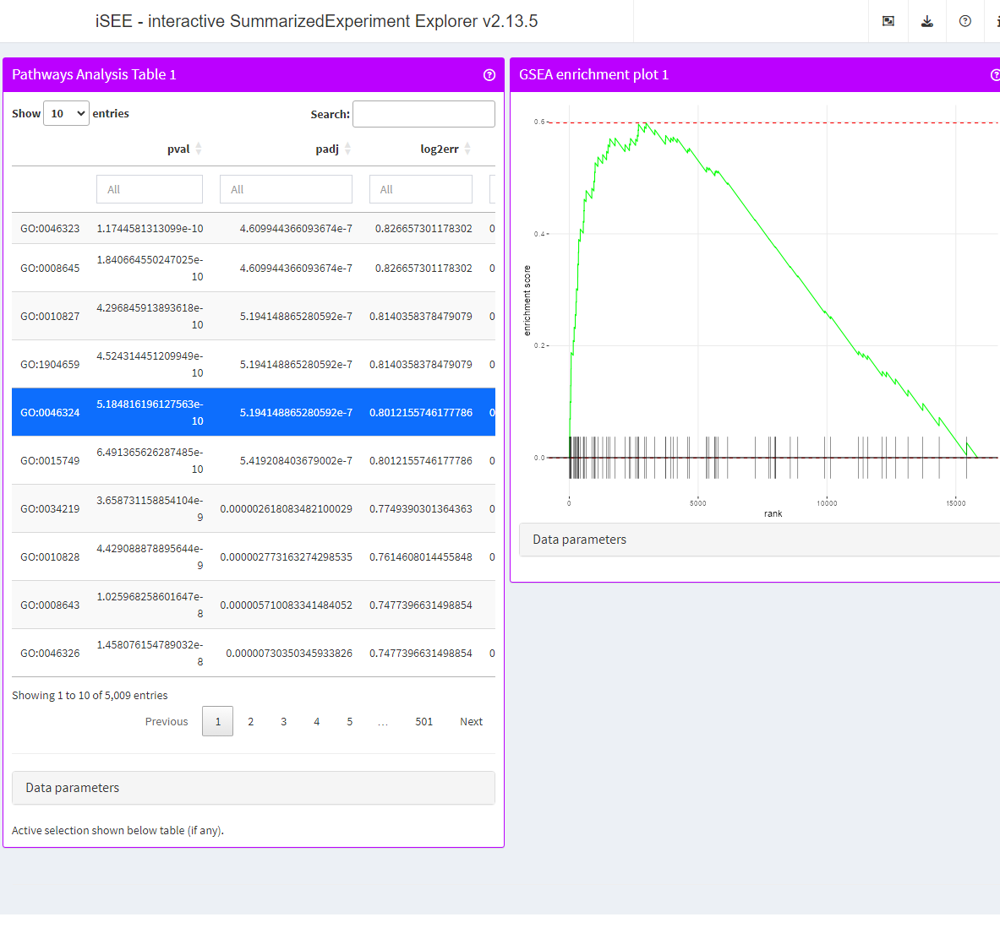

vignettes/iSEEpathways.Rmd
iSEEpathways.RmdiSEEpathways
R is an open-source statistical environment which can be
easily modified to enhance its functionality via packages. iSEEpathways
is a R package available via the Bioconductor repository for packages.
R can be installed on any operating system from CRAN after which you can install
iSEEpathways
by using the following commands in your R session:
if (!requireNamespace("BiocManager", quietly = TRUE)) {
install.packages("BiocManager")
}
BiocManager::install("iSEEpathways")
## Check that you have a valid Bioconductor installation
BiocManager::valid()iSEEpathways is based on many other packages and in particular in those that have implemented the infrastructure needed for dealing with omics data and interactive visualisation. That is, packages like SummarizedExperiment, SingleCellExperiment, iSEE and shiny.
If you are asking yourself the question “Where do I start using Bioconductor?” you might be interested in this blog post.
As package developers, we try to explain clearly how to use our
packages and in which order to use the functions. But R and
Bioconductor have a steep learning curve so it is critical
to learn where to ask for help. The blog post quoted above mentions some
but we would like to highlight the Bioconductor support site
as the main resource for getting help: remember to use the
iSEEpathways tag and check the older
posts. Other alternatives are available such as creating GitHub
issues and tweeting. However, please note that if you want to receive
help you should adhere to the posting
guidelines. It is particularly critical that you provide a small
reproducible example and your session information so package developers
can track down the source of the error.
iSEEpathways
We hope that iSEEpathways will be useful for your research. Please use the following information to cite the package and the overall approach. Thank you!
## Citation info
citation("iSEEpathways")
#> To cite package 'iSEEpathways' in publications use:
#>
#> Rue-Albrecht K (2023). _iSEEpathways: iSEE extension for panels
#> related to pathway analysis_. R package version 0.99.0,
#> <https://github.com/iSEE/iSEEpathways>.
#>
#> A BibTeX entry for LaTeX users is
#>
#> @Manual{,
#> title = {iSEEpathways: iSEE extension for panels related to pathway analysis},
#> author = {Kevin Rue-Albrecht},
#> year = {2023},
#> note = {R package version 0.99.0},
#> url = {https://github.com/iSEE/iSEEpathways},
#> }iSEEpathways
library("iSEEpathways")
library("fgsea")
library("iSEE")
# Example data ----
simulated_data <- simulateExampleData()
pathways_list <- simulated_data[["pathwaysList"]]
features_stat <- simulated_data[["featuresStat"]]
se <- simulated_data[["summarizedexperiment"]]
# fgsea ----
set.seed(42)
fgseaRes <- fgsea(pathways = pathways_list,
stats = features_stat,
minSize = 15,
maxSize = 500)
fgseaRes <- fgseaRes[order(pval), ]
head(fgseaRes)
#> pathway pval padj log2err ES NES size
#> 1: pathway_1350 0.0004373110 0.5905978 0.4984931 0.2858201 1.503211 299
#> 2: pathway_4907 0.0005947840 0.5905978 0.4772708 0.3250965 1.599638 178
#> 3: pathway_3983 0.0007509197 0.5905978 0.4772708 0.2558001 1.398213 451
#> 4: pathway_398 0.0008716489 0.5905978 0.4772708 0.2799932 1.477849 305
#> 5: pathway_3359 0.0009809867 0.5905978 0.4550599 -0.3724340 -1.674911 106
#> 6: pathway_1289 0.0009835850 0.5905978 0.4550599 0.3479133 1.638048 124
#> leadingEdge
#> 1: feature_6060,feature_9203,feature_1852,feature_1883,feature_12903,feature_2143,...
#> 2: feature_9265,feature_6286,feature_14879,feature_9600,feature_5335,feature_12205,...
#> 3: feature_495,feature_12466,feature_13128,feature_3069,feature_5278,feature_4248,...
#> 4: feature_6478,feature_2164,feature_922,feature_4298,feature_6585,feature_1633,...
#> 5: feature_3879,feature_2726,feature_6870,feature_6787,feature_9700,feature_693,...
#> 6: feature_6376,feature_12953,feature_8391,feature_3147,feature_7330,feature_11551,...
# iSEE ---
se <- embedPathwaysResults(fgseaRes, se, name = "fgsea", class = "fgsea", pathwayType = "simulated",
pathwaysList = pathways_list, featuresStats = features_stat)
app <- iSEE(se, initial = list(
PathwaysTable(ResultName="fgsea", Selected = "pathway_1350 ", PanelWidth = 6L),
FgseaEnrichmentPlot(ResultName="fgsea", PathwayId = "pathway_1350", PanelWidth = 6L)
))
if (interactive()) {
shiny::runApp(app)
}
The iSEEpathways package (Rue-Albrecht, 2023) was made possible thanks to:
This package was developed using biocthis.
Code for creating the vignette
## Create the vignette
library("rmarkdown")
system.time(render("iSEEpathways.Rmd", "BiocStyle::html_document"))
## Extract the R code
library("knitr")
knit("iSEEpathways.Rmd", tangle = TRUE)Date the vignette was generated.
#> [1] "2023-09-05 21:57:33 UTC"Wallclock time spent generating the vignette.
#> Time difference of 24.065 secsR session information.
#> ─ Session info ───────────────────────────────────────────────────────────────────────────────────────────────────────
#> setting value
#> version R version 4.3.1 (2023-06-16)
#> os Ubuntu 22.04.3 LTS
#> system x86_64, linux-gnu
#> ui X11
#> language en
#> collate en_US.UTF-8
#> ctype en_US.UTF-8
#> tz UTC
#> date 2023-09-05
#> pandoc 3.1.1 @ /usr/local/bin/ (via rmarkdown)
#>
#> ─ Packages ───────────────────────────────────────────────────────────────────────────────────────────────────────────
#> package * version date (UTC) lib source
#> abind 1.4-5 2016-07-21 [1] CRAN (R 4.3.1)
#> backports 1.4.1 2021-12-13 [1] CRAN (R 4.3.1)
#> bibtex 0.5.1 2023-01-26 [1] CRAN (R 4.3.1)
#> Biobase * 2.61.0 2023-04-25 [1] Bioconductor
#> BiocGenerics * 0.47.0 2023-04-25 [1] Bioconductor
#> BiocManager 1.30.22 2023-08-08 [2] CRAN (R 4.3.1)
#> BiocParallel 1.35.4 2023-08-17 [1] Bioconductor
#> BiocStyle * 2.29.1 2023-07-19 [1] Bioconductor
#> bitops 1.0-7 2021-04-24 [1] CRAN (R 4.3.1)
#> bookdown 0.35 2023-08-09 [1] CRAN (R 4.3.1)
#> bslib 0.5.1 2023-08-11 [2] CRAN (R 4.3.1)
#> cachem 1.0.8 2023-05-01 [2] CRAN (R 4.3.1)
#> circlize 0.4.15 2022-05-10 [1] CRAN (R 4.3.1)
#> cli 3.6.1 2023-03-23 [2] CRAN (R 4.3.1)
#> clue 0.3-64 2023-01-31 [1] CRAN (R 4.3.1)
#> cluster 2.1.4 2022-08-22 [3] CRAN (R 4.3.1)
#> codetools 0.2-19 2023-02-01 [3] CRAN (R 4.3.1)
#> colorspace 2.1-0 2023-01-23 [1] CRAN (R 4.3.1)
#> colourpicker 1.3.0 2023-08-21 [1] CRAN (R 4.3.1)
#> ComplexHeatmap 2.17.0 2023-04-25 [1] Bioconductor
#> cowplot 1.1.1 2020-12-30 [1] CRAN (R 4.3.1)
#> crayon 1.5.2 2022-09-29 [2] CRAN (R 4.3.1)
#> data.table 1.14.8 2023-02-17 [1] CRAN (R 4.3.1)
#> DelayedArray 0.27.10 2023-07-28 [1] Bioconductor
#> desc 1.4.2 2022-09-08 [2] CRAN (R 4.3.1)
#> digest 0.6.33 2023-07-07 [2] CRAN (R 4.3.1)
#> doParallel 1.0.17 2022-02-07 [1] CRAN (R 4.3.1)
#> dplyr 1.1.3 2023-09-03 [1] CRAN (R 4.3.1)
#> DT 0.29 2023-08-29 [1] CRAN (R 4.3.1)
#> ellipsis 0.3.2 2021-04-29 [2] CRAN (R 4.3.1)
#> evaluate 0.21 2023-05-05 [2] CRAN (R 4.3.1)
#> fansi 1.0.4 2023-01-22 [2] CRAN (R 4.3.1)
#> fastmap 1.1.1 2023-02-24 [2] CRAN (R 4.3.1)
#> fastmatch 1.1-4 2023-08-18 [1] CRAN (R 4.3.1)
#> fgsea * 1.27.1 2023-08-15 [1] Bioconductor
#> fontawesome 0.5.2 2023-08-19 [2] CRAN (R 4.3.1)
#> foreach 1.5.2 2022-02-02 [1] CRAN (R 4.3.1)
#> fs 1.6.3 2023-07-20 [2] CRAN (R 4.3.1)
#> generics 0.1.3 2022-07-05 [1] CRAN (R 4.3.1)
#> GenomeInfoDb * 1.37.3 2023-08-25 [1] Bioconductor
#> GenomeInfoDbData 1.2.10 2023-08-30 [1] Bioconductor
#> GenomicRanges * 1.53.1 2023-05-04 [1] Bioconductor
#> GetoptLong 1.0.5 2020-12-15 [1] CRAN (R 4.3.1)
#> ggplot2 3.4.3 2023-08-14 [1] CRAN (R 4.3.1)
#> ggrepel 0.9.3 2023-02-03 [1] CRAN (R 4.3.1)
#> GlobalOptions 0.1.2 2020-06-10 [1] CRAN (R 4.3.1)
#> glue 1.6.2 2022-02-24 [2] CRAN (R 4.3.1)
#> gtable 0.3.4 2023-08-21 [1] CRAN (R 4.3.1)
#> highr 0.10 2022-12-22 [2] CRAN (R 4.3.1)
#> htmltools 0.5.6 2023-08-10 [2] CRAN (R 4.3.1)
#> htmlwidgets 1.6.2 2023-03-17 [2] CRAN (R 4.3.1)
#> httpuv 1.6.11 2023-05-11 [2] CRAN (R 4.3.1)
#> httr 1.4.7 2023-08-15 [2] CRAN (R 4.3.1)
#> igraph 1.5.1 2023-08-10 [1] CRAN (R 4.3.1)
#> IRanges * 2.35.2 2023-06-22 [1] Bioconductor
#> iSEE * 2.13.5 2023-07-23 [1] Bioconductor
#> iSEEpathways * 0.99.0 2023-09-05 [1] Bioconductor
#> iterators 1.0.14 2022-02-05 [1] CRAN (R 4.3.1)
#> jquerylib 0.1.4 2021-04-26 [2] CRAN (R 4.3.1)
#> jsonlite 1.8.7 2023-06-29 [2] CRAN (R 4.3.1)
#> knitr 1.43 2023-05-25 [2] CRAN (R 4.3.1)
#> later 1.3.1 2023-05-02 [2] CRAN (R 4.3.1)
#> lattice 0.21-8 2023-04-05 [3] CRAN (R 4.3.1)
#> lifecycle 1.0.3 2022-10-07 [2] CRAN (R 4.3.1)
#> lubridate 1.9.2 2023-02-10 [1] CRAN (R 4.3.1)
#> magrittr 2.0.3 2022-03-30 [2] CRAN (R 4.3.1)
#> Matrix 1.6-1 2023-08-14 [2] CRAN (R 4.3.1)
#> MatrixGenerics * 1.13.1 2023-07-25 [1] Bioconductor
#> matrixStats * 1.0.0 2023-06-02 [1] CRAN (R 4.3.1)
#> memoise 2.0.1 2021-11-26 [2] CRAN (R 4.3.1)
#> mgcv 1.9-0 2023-07-11 [2] CRAN (R 4.3.1)
#> mime 0.12 2021-09-28 [2] CRAN (R 4.3.1)
#> miniUI 0.1.1.1 2018-05-18 [2] CRAN (R 4.3.1)
#> munsell 0.5.0 2018-06-12 [1] CRAN (R 4.3.1)
#> nlme 3.1-163 2023-08-09 [2] CRAN (R 4.3.1)
#> pillar 1.9.0 2023-03-22 [2] CRAN (R 4.3.1)
#> pkgconfig 2.0.3 2019-09-22 [2] CRAN (R 4.3.1)
#> pkgdown 2.0.7 2022-12-14 [2] CRAN (R 4.3.1)
#> plyr 1.8.8 2022-11-11 [1] CRAN (R 4.3.1)
#> png 0.1-8 2022-11-29 [1] CRAN (R 4.3.1)
#> promises 1.2.1 2023-08-10 [2] CRAN (R 4.3.1)
#> purrr 1.0.2 2023-08-10 [2] CRAN (R 4.3.1)
#> R6 2.5.1 2021-08-19 [2] CRAN (R 4.3.1)
#> ragg 1.2.5 2023-01-12 [2] CRAN (R 4.3.1)
#> RColorBrewer 1.1-3 2022-04-03 [1] CRAN (R 4.3.1)
#> Rcpp 1.0.11 2023-07-06 [2] CRAN (R 4.3.1)
#> RCurl 1.98-1.12 2023-03-27 [1] CRAN (R 4.3.1)
#> RefManageR * 1.4.0 2022-09-30 [1] CRAN (R 4.3.1)
#> rintrojs 0.3.2 2022-08-09 [1] CRAN (R 4.3.1)
#> rjson 0.2.21 2022-01-09 [1] CRAN (R 4.3.1)
#> rlang 1.1.1 2023-04-28 [2] CRAN (R 4.3.1)
#> rmarkdown 2.24 2023-08-14 [2] CRAN (R 4.3.1)
#> rprojroot 2.0.3 2022-04-02 [2] CRAN (R 4.3.1)
#> S4Arrays 1.1.6 2023-08-30 [1] Bioconductor
#> S4Vectors * 0.39.1 2023-05-03 [1] Bioconductor
#> sass 0.4.7 2023-07-15 [2] CRAN (R 4.3.1)
#> scales 1.2.1 2022-08-20 [1] CRAN (R 4.3.1)
#> sessioninfo * 1.2.2 2021-12-06 [2] CRAN (R 4.3.1)
#> shape 1.4.6 2021-05-19 [1] CRAN (R 4.3.1)
#> shiny 1.7.5 2023-08-12 [2] CRAN (R 4.3.1)
#> shinyAce 0.4.2 2022-05-06 [1] CRAN (R 4.3.1)
#> shinydashboard 0.7.2 2021-09-30 [1] CRAN (R 4.3.1)
#> shinyjs 2.1.0 2021-12-23 [1] CRAN (R 4.3.1)
#> shinyWidgets 0.8.0 2023-08-30 [1] CRAN (R 4.3.1)
#> SingleCellExperiment * 1.23.0 2023-04-25 [1] Bioconductor
#> SparseArray 1.1.12 2023-08-31 [1] Bioconductor
#> stringi 1.7.12 2023-01-11 [2] CRAN (R 4.3.1)
#> stringr 1.5.0 2022-12-02 [2] CRAN (R 4.3.1)
#> SummarizedExperiment * 1.31.1 2023-05-01 [1] Bioconductor
#> systemfonts 1.0.4 2022-02-11 [2] CRAN (R 4.3.1)
#> textshaping 0.3.6 2021-10-13 [2] CRAN (R 4.3.1)
#> tibble 3.2.1 2023-03-20 [2] CRAN (R 4.3.1)
#> tidyselect 1.2.0 2022-10-10 [1] CRAN (R 4.3.1)
#> timechange 0.2.0 2023-01-11 [1] CRAN (R 4.3.1)
#> utf8 1.2.3 2023-01-31 [2] CRAN (R 4.3.1)
#> vctrs 0.6.3 2023-06-14 [2] CRAN (R 4.3.1)
#> vipor 0.4.5 2017-03-22 [1] CRAN (R 4.3.1)
#> viridisLite 0.4.2 2023-05-02 [1] CRAN (R 4.3.1)
#> xfun 0.40 2023-08-09 [2] CRAN (R 4.3.1)
#> xml2 1.3.5 2023-07-06 [2] CRAN (R 4.3.1)
#> xtable 1.8-4 2019-04-21 [2] CRAN (R 4.3.1)
#> XVector 0.41.1 2023-05-03 [1] Bioconductor
#> yaml 2.3.7 2023-01-23 [2] CRAN (R 4.3.1)
#> zlibbioc 1.47.0 2023-04-25 [1] Bioconductor
#>
#> [1] /__w/_temp/Library
#> [2] /usr/local/lib/R/site-library
#> [3] /usr/local/lib/R/library
#>
#> ──────────────────────────────────────────────────────────────────────────────────────────────────────────────────────This vignette was generated using BiocStyle (Oleś, 2023) with knitr (Xie, 2023) and rmarkdown (Allaire, Xie, Dervieux et al., 2023) running behind the scenes.
Citations made with RefManageR (McLean, 2017).
[1] J. Allaire, Y. Xie, C. Dervieux, et al. rmarkdown: Dynamic Documents for R. R package version 2.24. 2023. URL: https://github.com/rstudio/rmarkdown.
[2] M. W. McLean. “RefManageR: Import and Manage BibTeX and BibLaTeX References in R”. In: The Journal of Open Source Software (2017). DOI: 10.21105/joss.00338.
[3] A. Oleś. BiocStyle: Standard styles for vignettes and other Bioconductor documents. R package version 2.29.1. 2023. DOI: 10.18129/B9.bioc.BiocStyle. URL: https://bioconductor.org/packages/BiocStyle.
[4] R Core Team. R: A Language and Environment for Statistical Computing. R Foundation for Statistical Computing. Vienna, Austria, 2023. URL: https://www.R-project.org/.
[5] K. Rue-Albrecht. iSEEpathways: iSEE extension for panels related to pathway analysis. R package version 0.99.0. 2023. URL: https://github.com/iSEE/iSEEpathways.
[6] H. Wickham. “testthat: Get Started with Testing”. In: The R Journal 3 (2011), pp. 5–10. URL: https://journal.r-project.org/archive/2011-1/RJournal_2011-1_Wickham.pdf.
[7] H. Wickham, W. Chang, R. Flight, et al. sessioninfo: R Session Information. R package version 1.2.2. 2021. URL: https://CRAN.R-project.org/package=sessioninfo.
[8] Y. Xie. knitr: A General-Purpose Package for Dynamic Report Generation in R. R package version 1.43. 2023. URL: https://yihui.org/knitr/.